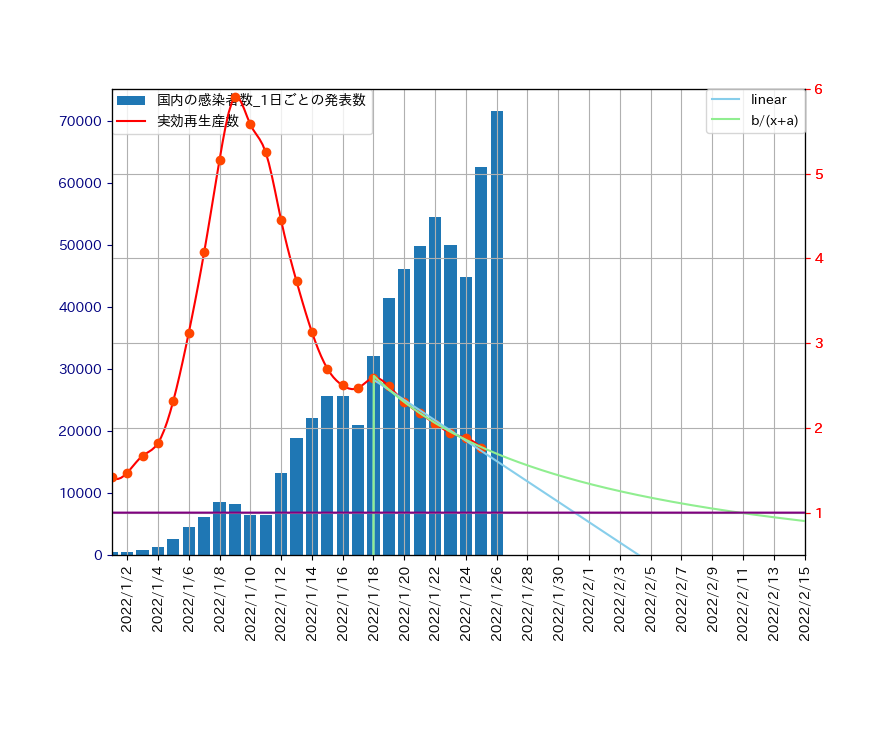
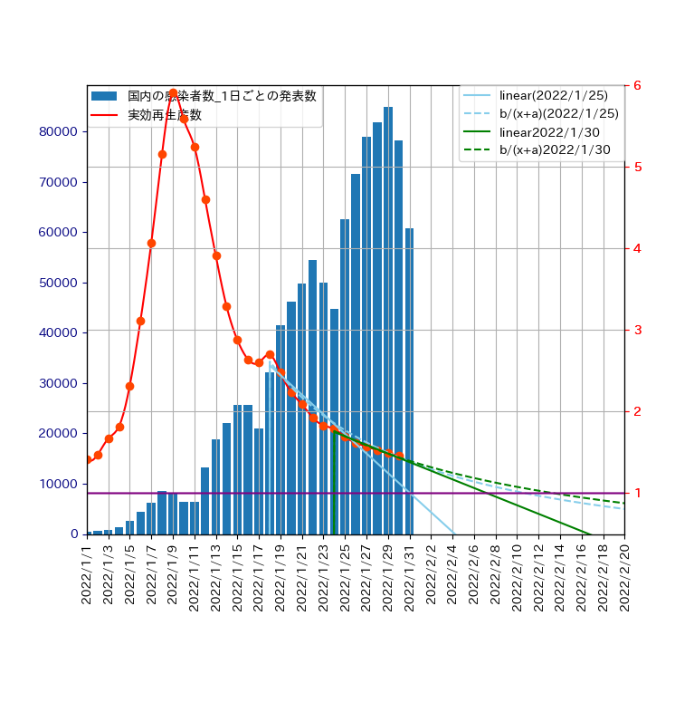

2022年1月8日から1月25日までの実効再生産数のデータ(東洋経済)を用いて、
第6波の感染者数がピークとなる日を予測します。
予測方法は、回帰直線を用いたものと、関数\(\displaystyle y = \frac{b}{x+a}\)でフィッティング
したものを用います。ピークの予測日は、実効再生産数の予測値が１になった時で与えられます。
結果は、
- 回帰直線を用いた場合
- \(\displaystyle y = \frac{b}{x+a}\)を用いた場合
となりました。この範囲に収まれば、予測は正しかったことになります。
図示すると以下のようになります。さて、この予測は当たるでしょうか？

作成したプログラムについては、
ここ
をご覧ください。
データの更新
時間の経過とともにデータが増えたので、2022年1月24日から1月30日までの実効再生産数の
値を用いて、予測をやり直してみました。結果は、
- 回帰直線を用いた場合
- 2022年2月7日：こちらの値は、前回の1月31日から大きくずれました。
- \(\displaystyle y = \frac{b}{x+a}\)を用いた場合
- 2022年2月14日：こちらの値は、前回の2月11日からは大きく動いていません。
となりました。以上より第6波のピークは2月中旬に訪れる確率が非常に高いと思われます。

1月25日に引いた回帰直線と回帰曲線が 前回とは違って、データからずれてしまったのは、
その後、データが更新されたのが原因と思われます。
データの再更新
更に時間が経過したので、2022年1月30日から2月5日までの実効再生産数の
値を用いて、予測のやり直しをします。結果は、
- 回帰直線を用いた場合
- \(\displaystyle y = \frac{b}{x+a}\)を用いた場合
- 2022年2月14日：こちらの値は、前回から動いていません。
となりました。以上より第6波のピークは2月中旬に訪れる確率が非常に高いと思われます。